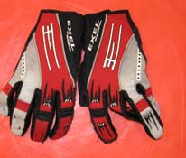
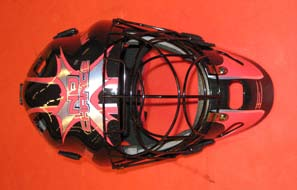
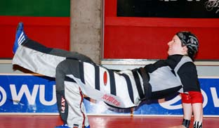
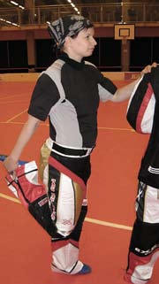
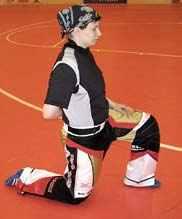
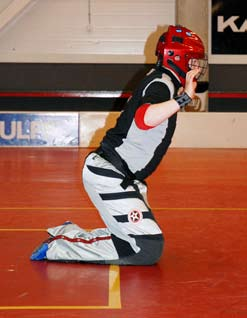
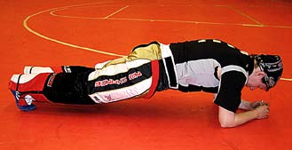
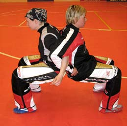
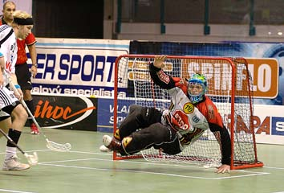

Special Situations and Goalkeeping — International Floorball Federation
中文翻译版 · 中英对照 · 保留原图
守门员是场上最重要的球员之一。守门员是阻止对手得分的最后防线，如果球队不能信任门将，这种不信任可能导致糟糕的表现。然而，如果教练组重视守门员，他们的能力和技术可以得到优化。一小时的训练课对守门员来说可能不如对场上球员那样有激励性，因此优先考虑以让每个人满意的方式来设计训练课。
Goalkeeper is one of the most important players, if not the most important, on the field. The goalkeeper is the final lock preventing the opponent from scoring, and if the team can not trust the goalie, this unreliability might result in poor play. However if the goalkeepers are taken into consideration by the coaching staff, the abilities and skills they have can be optimized. One hour practice session is most likely not as inspiring for the goalkeeper as for the field players, so creating the session in such manner that it will be satisfying for everybody should be prioritized.
出于安全考虑，任何青少年球员都不应在没有适当装备的情况下担任守门员。没有认证的面罩，球可能击中面部造成不可挽回的伤害。没有足够的护膝，长期跪地的压力可能导致严重损伤。所有经 IFF 认证的装备均可在 IFF 官网上查阅。
No junior player should be allowed to play as a goalkeeper without appropriate equipment because of the safety issues. Without approved face mask the ball might hit the face and cause irreparable damage. Without adequate knee pads the strain from kneeling might cause severe injury in the long run. All the equipment approved by IFF can be found on the IFF's website.
是否使用手套由守门员自行决定。在训练课开始时，尤其是对青少年球员，强烈建议使用手套以防止受伤。手套应当紧贴，且不应影响出球时的释放。有专门的软曲守门手套，也可以使用其他适合守门的运动手套。

It is up to goalkeeper to decide whether to use gloves. In the beginning of a practice session and especially for junior players the use is highly recommended in order to prevent injuries. The gloves should be tight and they should not affect the release of the ball when throwing. Special gloves are made for Floorball but also other gloves, suitable for goalkeeping, can be used.
面罩应贴合守门员的头部。护目镜应有良好的视野，但网眼不能太大，以免球杆或球穿过。面罩必须经过 IFF 认证。

The mask should fit the goalkeepers head. The visor should have good visibility but the holes should not be too large that would let the blade or a ball pass through. All equipment approved by IFF can be found on the IFF website.
膝盖和肘部使用护具，主要用于防止劳损性伤害。护具应牢固不滑动，但不能过紧限制活动。胸部护具或前置护垫的球衣也建议使用。所有软曲装备制造商都生产护具，但初期穿着厚层衣物也能提供足够的保护。长期来看，使用专业装备是最佳选择。
Pads are used on the knees and elbows to prevent mostly strain injuries. Pads should be firm so that they don't slide during the practice or game, but they should not be so tight that they would prevent movement. Also chest shields, or shirts that have pads in front, are recommended. All Floorball equipment manufacturers make pads, but in the beginning also thick layers of clothes will cover enough. In the long run however the use of special made equipment is the best option.
专业的软曲守门裤前部有额外衬垫，由涤纶和尼龙复合材料制成。初期任何能活动自如的长裤都可以替代。球衣为长袖设计，前部有额外衬垫覆盖胸腹区域，应有领口保护咽喉。
The pants especially made for the sport have extra padding in front and they are made out of a composition of polyester and nylon. In the beginning any long pants that allow movement will do. The shirt has long sleeves and it also has extra padding in front to cover the chest and stomach area. There should be a collar to cover the throat as well.
可以使用与场上球员相同的热身练习，但应特别注意肩部、髋部、手腕和脚踝的热身，以保持关节活动范围并预防受伤。在热身中可以训练身体能力，如协调性、肌肉力量、身体控制和柔韧性。拉伸和柔韧性练习至关重要。
建议训练：慢速慢跑或跳绳（参见练习21）；静态或动态肌肉练习（参见练习4和5）。
Same warm-up drills can be used as with the field players but special attention should be paid to warm up shoulders and hips as well as wrist and ankles to maintain the joint movement and to prevent injuries. Physical abilities can be practiced within the warm up such as coordination, muscle strength, body control and flexibility. Stretching and flexibility exercises are crucial.
Suggested training: Jogging at a low pace or rope-skipping (also see drill 21); Either static or dynamic muscle exercises (see drills 4 and 5).
| 目的 | 练习眼手协调能力和反应 / To practice eye-hand coordination and reaction |
| 组织形式 | 守门员面向墙站立约 1-3 米，手持一球；不需面罩 / Goalkeeper standing approx. 1-3m from the wall with one ball; No face mask needed |
| 执行方法 | 守门员将球投向墙壁：单手投单手接；单手投另一只手接；双手接。球的出手高度约在眼部水平，从墙壁反弹回来也应保持同一水平以缩短反应时间。手臂应保持基本扑救姿势。手腕完成动作。 |
| 变化 | 调整与墙壁的距离可改变反应速度；使用两球（右手投第一球时左手将第二球移至右手）；两人互投（各种距离、运动中）；第三人从背后向墙投球，增加反应不可预测性；所有变体都可以跪姿执行。 |
| 目的 | 在比赛姿势中热身；热身手部；练习眼手协调 / To warm up in a game like position; To warm up hands; To practice eye-hand coordination |
| 组织形式 | 两名守门员跪姿相距 2-3 米；一个球 / Goalkeepers on 2-3m distance on knee stand; One ball |
| 执行方法 | 守门员用手互相击球；使用正手和反手；双手；弹地球或空中球。守门员应尽量保持比赛姿势，始终挺身并保持活跃，球应始终受控。 |
| 变化 | 根据水平可同时使用两球；也可使用羽毛球或乒乓球装备（增加趣味性）。 |
| 目的 | 热身，同时训练肌肉力量和身体控制 / To warm up; Also to train muscle strength and body control |
| 组织形式 | 守门员坐姿，膝盖弯曲，上身向后靠于双手上（如配图所示） |
| 执行方法 | 抬起身体中段，使膝盖成 90 度角；交替伸展膝盖，保持平衡和背部挺直；重复数次后加速，双脚几乎不着地，持续 20 秒（类似踢腿动作）；重复三组。要点：背部保持挺直，髋部不下垂。发展髋部柔韧性和核心力量。 |

柔韧性可以在热身中结合针对髋关节的专门动作进行练习。肩部、手臂和手腕也应热身，以防止投掷时受伤。全面的柔韧性和敏捷性（动作反应）也可以加入热身部分。以下练习可在热身结束时与拉伸一起进行。
Flexibility can be practiced within the warm-up with specific movement addressed to the hip joint. Also shoulder, arms and wrists should be warmed up to prevent injuries while throwing. All around flexibility and agility (the movement reactions) can also be added to the warm up section. The following exercises can be added in the end of the warm up together with stretching.
抬腿 Leg lift：仰卧，双手向两侧展开。双脚交替向对侧手臂方向抬起，肩部贴地，动作应从髋和下背发动，有控制地完成。重复时面朝下俯卧。
持棍下背旋转 Lower back rotation with stick：双脚与肩同宽稳固站立，宽握持棍置于颈后，髋部微屈保持稳定，上身从一侧转到另一侧。
Leg lift: Lay on back with hands pointing to the sides. Lift feet alternately towards the opposite sides hand so that shoulders should be kept on the ground. The movement should be controlled and start from the hip and lower back. Exercise repeated facing ground.
Lower back rotation with stick: Stand steadily with feet shoulder width apart. Hold a stick with a wide grip placed behind the neck. There should be a slight flexion in the hip to keep the hip joint stable. Turn upper body from side to side.
单脚站立（支撑脚），另一脚在前方从一侧摆到另一侧。下背保持稳定，动作应来自髋部。也进行前后摆腿（双脚交替）。
跨过栏架（或类似物体）是练习髋部柔韧性的好方法。确保球员以正确技术跨栏。例如 2 组 × 10 个栏，组间短暂恢复。栏架高度根据球员身高调整（约等于腿内侧长度）。要点：双手放在髋部或颈后；脚尖起步，脚跟着地；膝盖引领动作；背部挺直。
Stand with one foot (support). Swing the other foot from side to side in front. The lower back should stay still so that the movement comes from the hips. Also swinging forward-backward (both feet).
Walking over hurdles (or other similar objects) is a good way of practising flexibility on the hip region. Make sure that the player steps over the hurdle with right technique. For example 2 times 10 hurdles with short recovery between each round. Height of hurdles according to height of player. Place hands on hips or behind neck; Step from toes, coming down with heel; Knee leads movement; Back straight.
持棍绕肩 Arm rotation with a stick：双脚与肩同宽站立，宽握持棍，双臂绕头和肩旋转。
手臂绕环 Arm rotation：双臂绕肩旋转，向前和向后；双臂同时向相反方向。
手腕绕环 Wrist rotation：双手在胸前交叉握拳，用手腕和手指做波浪状运动。
Arm rotation with stick: Stand with legs shoulder width apart, hold a stick with wide grip. Rotate arms around head and shoulders.
Arm rotation: Rotate both arms around shoulders. Backwards and forwards. Both arms to opposite direction at the same time.
Wrist rotation: Clasp hands in front of your chest. Make a wave like movement using wrists and fingers.
前后滚翻（从基本扑救姿势开始和结束）：建议使用垫子。站基本扑救姿势，下巴贴胸、双腿并拢，用脚发力前滚翻，返回基本扑救姿势。重复 5 次。同样方法进行后滚翻。
侧滚翻（从一侧滚到另一侧）：建议使用垫子。站基本扑救姿势，前倾并决定向哪侧滚动，将该侧前臂先着地，然后上臂、肩膀和背部依次着地。返回基本扑救姿势。左右各重复 5 次。
Forward and backward rolls (from and to basic save position): Matt recommended. Stand as in basic save position. Put chin to chest and legs together. Push with feet for speed and roll forward. Return to basic save position. Repeated 5 times. Same with backward roll.
Rolling sideways from side to side (from and to basic save position): Matt recommended. Stand as in basic save position. Lean forward and decide which side to roll to. Place that sides forearm on floor after which upper arm and shoulder and back. Return to basic save position. Repeat 5 times to both left and right.
拉伸是每位运动员训练中必不可少的环节。守门员尤其需要注意保持肌肉的活动范围和弹性——这两项能力都可以通过拉伸来训练。拉伸的目标取决于时机，并根据拉伸的类型和时长而变化。长时间拉伸会使肌肉疲劳，因此应避免在训练前和训练中进行，但可以作为单独的训练课偶尔进行。训练后拉伸的最佳时间是在训练结束 1.5 到 2 小时后，此时肌肉已从训练中恢复。这是为了避免对过于温暖的肌肉进行过度拉伸。训练后最好的恢复方式是慢速慢跑或步行，使乳酸和其他废物开始从肌肉中排走。
Stretching is one of the essential parts in every athletes training. Especially goalkeepers should pay attention to maintaining the range of movement and elasticity of the muscles, both abilities that can be trained by stretching. The objective of stretching depends on the timing and is varied according to the type and length of the stretches. Long stretches makes muscles fatigue so they should be avoided before and during practice but executed as an individual training session from time to time. The optimal time for stretching after practice is from 1,5 up to 2 hours, when the muscles have recovered from the practice. This is to avoid over stretching too warm muscles. Best way to recover from the practice is slow jogging or walking, so that the lactic acid and other waste products will start moving away from the muscles.
| 时机 | 目的 | 时长 | 方式 |
|---|---|---|---|
| 训练前 | 动态拉伸热身关节，提高关节活动敏捷度（神经系统准备） | 5-10秒 | 热身后、带球热身前集体进行，关节微屈短时拉伸 |
| 训练中 | 保持关节弹性和敏捷度 | 最多5秒 | 可在讲解下个练习时进行短暂拉伸，非必需 |
| 训练后 | 帮助肌肉从训练课中恢复 | 30-45秒 | 训练后1.5-2小时 |
| 单独训练课 | 获得并保持柔韧性和活动范围，促进恢复 | 45-60秒 | 重度训练或比赛次日，30分钟慢跑后再进行恢复训练 |
站立，手扶墙或固定物保持平衡。抓住后方脚踝或前脚掌，向臀部拉。髋部挺直，膝盖向后移。保持拉伸。换另一侧。

Stand and touch wall or stationary object for support. Grasp top ankle or forefoot behind. Pull ankle or forefoot to rear end. Straighten hip by moving knee backward. Hold stretch. Repeat with opposite side.
跪立。一脚前置保持平衡，膝盖成 90 度角。将另一侧髋部向前推。不要让髋部下坠或旋转。换另一侧。

Stand on knees. Place one foot in front for balance, knee in 90 degrees angle. Push the other sides hip forward. Don't let the hip drop or rotate. Repeat with opposite side.
将脚放在长凳或高台上。朝脚的方向伸展或使躯干靠近腿。保持拉伸。换另一侧。
Place foot on bench or elevation. Reach toward foot on bench or bring torso toward leg. Hold stretch. Repeat with opposite leg.
坐在地板上。一腿在前方伸直。另一腿跨过伸直的膝盖，将腿向身体方向抱。保持背部挺直。换另一侧。
Sit down on a floor. Keep one leg extended in front. Place the other leg across the extended knee and hold same leg towards your body. Hold back straight. Repeat with opposite leg.
面对墙壁站立。前脚掌触墙，使脚踝处于屈曲状态。身体向墙倾斜。换另一侧。
Stand facing a wall. Ball of the foot touching the wall so that ankle is in a flexed position. Lean against the wall. Repeat with opposite leg.
面向墙壁站立，右前臂贴墙，手臂略低于肩部高度，肘部成 90 度角。身体向左转。换另一侧。
Stand facing a wall with right hand's forearm in contact with the wall so that the arm is slightly below the shoulder level and the elbow is in a 90 degrees angle. Turn body to the left. Repeat with opposite side.
将手臂横向置于胸前。对侧手放在肘部。推动肘部向胸部方向。换另一侧。
Position arm across chest. Place opposite hand on the elbow. Push elbow towards chest. Repeat with other side.
双脚并拢站立。弯腰使胸部贴大腿，手臂环绕抱膝。先屈膝，然后缓慢伸直双腿，背部圆拱，眼睛看脚尖，手臂仍紧抱膝盖。应感觉到肩胛骨之间的上背部位有拉伸感。
Stand feet together. Bend over so that chest touches the thighs, arms holding around the knees. First knees flexed, then slowly straightened, with round back, eyes looking at toes still holding arms tight around knees. There should be a stretch in the upper back between the shoulder blades.
本教材将守门员训练划分为三个级别：
所有级别技能发展的目标是形成积极的守门风格和更好的比赛理解。
The following section is divided into three levels:
Skill development in all levels aims for active goaltending and a better game knowledge.
守门员最重要的身体能力是身体控制、反应速度、肌肉耐力（含心肺耐力）和眼手协调。教练应鼓励守门员独立训练。一种激励方式是制定个人训练计划。通常在团队训练课中没有时间给守门员持续的反馈，因此偶尔进行私人课程是强调守门员重要性的好方法。在这些课程中，教练可以安排需要练习射门的场上球员加入。
The most important physical abilities the goalkeeper possesses are body control, reaction speed, muscle endurance in association with aerobic endurance, and eye-hand coordination. All abilities should be practiced and the coach should encourage goalkeepers to do so independently. One way to motivate is to create an individual practice plan. Usually there is no time during the team practice session to give consistent feedback to the goalkeeper so private lessons occasionally is a good way to emphasise the importance of the goalkeepers. Within these sessions the coach might include field players that have to practice shooting.
身体控制是影响姿势的重要因素。核心肌群，尤其是大腿、下背和腹部肌肉应当训练以维持身体控制和平衡。守门员的常规姿势是跪姿，重心在膝盖上，上身前倾以保持平衡，允许双脚向两侧移动。双手应略在胸前前方和两侧，便于向各个方向移动——这样如果球击中手，球会自动落在身体前方，比落在体侧更容易控制。
Body control is an important factor affecting the position. The muscles in the middle body, especially thighs, lower back and abdominals should be trained. The normal position of the goalkeeper is on knees, weight on knees and upper body slightly bent forward to maintain balance allowing feet move to both sides. Hands should be slightly in front of chest and on sides so that is easy to move them to all directions. Thus if the ball hits the hands, the ball will automatically drop in front of the body where it is better caught compared to the sides.
基本扑救姿势具有个体差异，取决于守门员的体型、身高和其他身体能力。但姿势应当具有侵略性、警觉、面向比赛，并且应易于从基本姿势向各个方向移动。
一些守门员倾向于在可能出现射门之前保持站立。这不仅视野更好，也省膝盖。如果球在进攻区或防守区角落（任意球/界外球情况），守门员保持站立是合理的。站立时守门员能更好地应对局势并做出相应反应——例如，在有射门可能时返回基本扑救姿势，因为下跪总比起立容易。
The basic save position is individual depending on the goalkeeper's body structure, size and other physical abilities. The position should however be aggressive, alert and towards the game, and should be easy to move to all directions from the basic position.
Some of the goalkeepers tend to stand up until there is a possibility for a shot. Apart from the better sight, it also saves the knees. From standing the goalkeeper can react better and act accordingly — for example return to a basic save position in case of a shot as it is always easier to come down than go up.
保持基本扑救姿势时，脚踝应在臀部下方呈轻微角度，脚尖朝内。这将防止球从两腿之间滑过。但双腿应自由活动，因此重心应在膝盖上，而非脚踝。这对脚踝来说并非自然姿势，建议经常站立并保持活动。
在训练基本姿势时，要考虑肌肉和动作的对称性。两侧应均衡训练以保持平衡。

While holding the basic save posture, the ankles should be underneath buttocks in a slight angle so that toes are pointing inwards. This will keep the ball from slipping through the legs. The legs should however be free to move so the weight should be on knees, not on the ankles. This is not a natural position for the ankle so it is recommended to stand up and keep in movement all the time.
The symmetry in muscles and in movement should be considered when training the basic position. Both sides should be trained equally so that the balance remains.
| 目的 | 训练大腿肌肉和深层核心肌肉；在静态姿势中保持平衡 / To train thigh muscles and deep core muscles; To hold balance in static position |
| 执行 | 保持半蹲姿势 30-60 秒。要点：膝盖应与脚尖和肩部对齐；膝盖成 90 度角（可用后背靠墙辅助获得正确角度）；背挺直、眼平视、手放髋部；也可两人配对（背靠背）执行。 |

| 目的 | 训练深层核心肌肉 / To train the deep core muscles |
| 执行 | 保持俯卧撑姿势，肘部着地，30-60 秒。交替抬脚（臀部及腘绳肌紧张也激活背肌）。要点：背挺直；肩胛骨与上脊柱同高（肩胛骨间有张力）；应激活深层核心而非仅表浅肌肉——通过“将腹部收向脊柱”来实现。 |

| 目的 | 练习大腿肌肉；练习动作反应速度 / To practice thigh muscles; To practice reaction speed of movement |
| 组织形式 | 守门员在球门区前以基本扑救姿势准备；教练或球员在距球门 7-10 米处持球 |
| 执行 | 教练射高球，守门员必须跳起扑救。要点：快速起跳，仅用双脚完成动作。这对应于对方射高球、守门员必须站起来看清球并扑救的情况。 |
| 变化 | 结合前移训练：教练射三次——①精准射向球门线上的守门员；②守门员向前移向第二个来球（紧跟第一次）；③第三个球射高，守门员须跳起扑救。 |
| 目的 | 练习返回基本扑救姿势；练习动作反应速度 / To practice returning to basic save position; To practice reaction speed |
| 组织形式 | 教练（或球员）在球门前 5-7 米处持球；守门员在球门内基本扑救姿势 |
| 执行 | 教练精准射向守门员的不同目标点——下角用脚、上角用手。守门员必须始终努力保持基本扑救姿势。要点：强调返回扑救姿势；保持姿势意识（不躺倒、手活跃、膝盖轻动、脚准备使用、准备向各方向移动）。比赛中每次扑救后都应有能力做下一次扑救。 |
| 变化 | 两个守门员在相距 5 米的球门中对练，互相投球试图得分，轮流或同时进行。 |
比赛情况发生迅速，因此守门员必须具有良好的反应能力。球越近，守门员必须反应越快——无论是对球还是对球员。反应速度分为两类：① 扑救反应（saving reactions）和 ② 比赛反应（game reactions）——即在不同比赛情况下所需的反应速度。
Game situations occur fast. Therefore the goalkeeper must have good reactions. The closer the ball is, the faster the goalkeeper has to react, both to the ball and to the players. The reaction speed is referred to as 1) saving reactions, as well as 2) game reactions; the speed needed to react in different game situations.
敏捷性和神经系统控制对守门员的反应至关重要。从大脑传递到执行肌肉的指令速率可以通过训练缩短反应时间。通过特定类型的训练，神经通路可以缩短，反应可以变得自动化。守门员可以独立训练，例如将球投向墙壁，但通常最好的方式是有专人射门。对反弹球也应形成自动伸手的反应。
The agility and neurological control is essential when thinking about the goalkeepers reactions. The rate of the stimulus delivered from the brain to the performing muscle can be trained to minimize the time of the reaction. With certain type of training the neurological path can be made shorter and reactions can be made automatic. There should also be an automatic reaction to reach for the ball in case of a rebound.
低位射门时脚的反应非常重要。脚也应用于封堵传球线路和拦截传球。重心应在膝盖上，使双脚能向两侧做出扑救反应。
手用于接球和扑救。手应在身体前方稍侧位置，使手能向各方向移动。守门员应能单手接球。只有在射门正对守门员而来时才应用双手接球。
头部应跟随手的运动，守门员不应害怕球。
所有反应应协调一致：如果扑救发生在左侧，左侧的手和脚应同时反应，头部也向左弯曲。这称为“手头组合”。
Feet reactions are important when low shots occur. Feet should also be used when blocking passing lanes and intercepting passes. The weight should be on knees so the feet are able to make a saving reaction to both sides.
Hands are used to catch the ball just as well as make a save. Hands should be slightly in front of the body so that hands are able to move to all directions. The goalkeeper should be able to catch the ball with one hand. Only if the shot is coming towards the goalkeeper, both hands should be used.
Head should follow the movement of the hands and the goalkeeper should not be afraid of the ball.
All reactions should be coordinated so that if the save is made on the left side, left side's hand and feet should react simultaneously with head also bending to the left. This is called hand and head combination.
| 目的 | 练习扑救反应 / To practice saving reactions |
| 组织形式 | 守门员背对球场站立，面朝球网；教练在球门前约 5-7 米处持球 |
| 执行 | 教练发信号（哨声或口令）后，守门员转身并对教练的射门做出反应。重复多次。要点：转身尽可能快速经济；注意脚的动作；手应随时准备扑救，重心主要落在脚上。 |
| 变化 | 教练可从障碍物（1.5×1.5米）后方射门，使守门员无法预判射门来源。 |
| 目的 | 练习扑救反应和移动 / To practice saving reactions and moving |
| 组织形式 | 3-5 名球员在距球门 7-10 米的不同扇区持球站立，编号 |
| 执行 | 教练喊号码，该编号球员射门。扑救后守门员返回基本扑救姿势准备下一次。号码随机快速喊出。要点：守门员全程保持扑救准备状态；应向来球方向移动（前移、侧移），始终返回基本姿势。 |
| 变化 | 三条线在中线排列（1、2、3号），教练喊号后对应路线球员运动中射门：①腕射；②单刀球（一对一）；③大力击射。 |
| 目的 | 练习扑救反应；训练肌肉协调与力量 / To practice saving reactions; To train muscle coordination and strength |
| 组织形式 | 守门员仰卧，膝盖弯曲，脚朝前；教练在球门前 5-7 米处持球 |
| 执行 | 教练发信号后守门员起身至仰卧起坐或基本扑救姿势，同时教练射门，守门员扑救。重复多次。也从俯卧姿势执行——守门员起身至基本姿势准备用手扑救。要点强调比赛中守门员始终需为下次扑救做准备；守门员应能从不同姿势返回基本扑救姿势。 |
| 目的 | 练习扑救反应 / To practice saving reactions |
| 组织形式 | 球门面向挡板/墙壁约 2 米距离；两名球员在球门后方持球 |
| 执行 | 球员轮流射门，球从墙壁反弹向球门。守门员或教练给出射门信号。要点：守门员无法预判射门角度，需持续保持扑救准备；低射强调脚反应，高射强调手和头反应。另参见练习 1 和 18。 |

在不同比赛情况中行动来自经验和比赛类训练。在比赛中守门员根据自己拥有的最佳技术技能形成一定数量的动作模式。首先需要识别这些技能，然后学习在哪种场合使用它们。虽然每种比赛情况各不相同，但技能可以且应当被训练以使反应尽可能快速。动作模式学得越好，执行越快。守门员应被鼓励始终挺立，应随时准备做下一次扑救，在任何情况下都不应“自己玩完”——例如轻易扑倒的情况下。
Acting in different game situations comes with experience and is best practised in game like drills and in actual game. In game situations the goalkeeper creates a certain amount of movement patterns according to the best technical skills he/she possesses. First he/she has to recognise the skills and then learn in which occasion to use them. Though game situations are all different, skills can and should be trained to make reactions fast as possible. The goalkeeper should be encouraged to stay up at all times. He/she should have readiness to make next save and should not out-play him/herself in any circumstances. This might happen in case the goalkeeper tends to dive easily.
| 目的 | 在比赛类环境中练习扑救反应；热身球员 / To practice saving reactions in game like situation; To warm up players |
| 组织形式 | 球员分成四组，每组三人，穿不同颜色背心（蓝/白/红/黄）；在小型场地或半场进行；球门顶放备用球 |
| 执行 | 各组在同一区域内进行 3v3 小场比赛（例如蓝对白、红对黄），蓝和红攻击一端、白和黄攻击另一端。要点：守门员须格外警觉，因为可能同时出现两个需要反应的情况；扑救或球出界后守门员将球传回场内；守门员必须知道谁是己方队友。 |
| 变化 | 根据球员人数调整；也可半场单球门进行——防守队获球权后须将球传过中线才可转为进攻，也可加长传射门环节。 |
守门员应能在整场比赛或训练中保持挺立的姿势。这需要强大的核心稳定性和肌肉耐力。主要涉及核心肌群、大腿和臀部肌肉。静态练习也能训练肌肉耐力，但为充分利用力量训练，最好进行动态训练，保持心率恒定——循环训练是不错的补充训练方式。
The goalkeeper should be able to maintain the upright position during the whole game or practice. This demands a strong mid body stabilization and endurance in respective muscles. The muscles affected are mostly the core muscles, thighs and buttocks. To get the most advantage from strength training, it is best to do dynamic exercises where the heart beat is kept on constant level. This can be accomplished with circuit training as supplement training.
三组 × 八个动作 × 20 次（或 3 × 8 × 60 秒）：
Three rounds of eight movements with 20 repetitions (or 3 × 8 × 60 seconds):
这些练习可作为循环训练的变体。核心要点：使用全身而非仅手臂，从下背屈曲发力。
These can be combined to circuit training as variation. Use whole body, not just arms. Flexion from lower back.
能看到球是基本前提。知道球在哪里并能接住它——即使戴着面罩且有一群球员挡在面前——是一种技能。眼手协调是视觉与手部运动的结合。最好通过使用不同器械（拍子和徒手）来接住物体来训练。这可以作为热身的一部分或单独的训练课进行。建议鼓励守门员在每次有空闲时间时玩球——例如休息期间和训练组织期间。
建议训练：
To see the ball is an axiom. To know where the ball is and to be able to catch it even behind a mask and a bunch of players is a skill. Eye-hand coordination is the vision with the movement of the hand. Best trained by using different devices such as rackets and plain hands to catch an object. Can be done as part of warm-up or as separate session. Encourage goalkeepers to play with ball every time there is spare time.
Suggested training:
基本扑救指由直接射门产生的扑救，射门球员在没有干扰的情况下能够从容射门。在比赛中这种情况不应经常发生，因为所有射门都应由防守球员封堵，但它们在训练中会被练习。基本扑救也出现在一对一和二对一的情况中，此时直接射门通常留给守门员处理。基本扑救最好在热身练习中训练。
Basic saves includes the saves that are the result from a direct shot where the player with the ball is able to shoot without harassment. They should not happen in a game as all shots should be covered by the defensive players but they are trained in the practices. Basic saves also emerge in one versus one and two versus one situations where the direct shot is usually left for the goalkeeper. Basic saves are best trained in the warm up drills.
| 目的 | 练习扑救反应，尤其是手部反应 / To practice saving reactions especially hands reactions |
| 组织形式 | 两名守门员面对面站立，相距约 5 米；一名持 10-15 球；另一名以基本扑救姿势准备，手低于肩。 |
| 执行 | 持球守门员向对方头部上方投球，扑救守门员需将双手向两侧举至最高以挡球。10-15 球后交换角色。重复数次。要点：扑救守门员必须用手挡球。 |
| 目的 | 练习基本扑救姿势和基本扑救 / To practice basic save position and basic saves |
| 组织形式 | 球员在球门区外约 5-7 米的半圆形排列，持球 |
| 执行 | 球员轮流射门，守门员在每次射门间有时间做基本姿势调整。球员使用短腕射或其他精准射门方式。要点：球员应集中精力射正球门；每人多球以减少捡球时间。 |
| 变化 | 球员从两端轮流射门（强调守门员侧向移动）；球员可一次连射三球；指定球员瞄准特定位置（如脚/低位、手/上角）来训练特定反应。 |
| 目的 | 在移动中练习基本扑救 / To practice basic saves in movement |
| 组织形式 | 球员在中线集合持球；两锥桶标记距球门约 7 米处的射门位置 |
| 执行 | 首位球员带球走几步后精准射门，下一位跟上。射门后捡球返回中线排队。要点：守门员在两次射门之间有足够时间做基本姿势调整；球员应向一侧倾斜使守门员向相应侧移动。 |
| 变化 | 可加入传球：第一位球员无球启动，到锥桶位置后接下一人的传球；球员自行决定向左或向右（决定射门角度）。 |
守门员的移动应当流畅、锐利且快速。球比球员移动得快，因此守门员应尝试预测球将传向何处并相应移动。所有移动应从腿部发起，使手保持自由随时扑救。因此腿部及核心力量应优化。脚的使用应依移动需要而定。
The goalkeeper's movement should be smooth, sharp and quick. The ball moves faster than the players, so the goalkeeper should try to predict where the ball is played next and move accordingly. All movement should happen from the legs so that hands are left free to make saves. Therefore strength in legs and middle body should be optimized.
如果需要大幅度侧向移动，应使用大幅度动作模式：膝盖向移动方向上提，另一侧脚蹬地发力。
前后移动用手更容易，但重心仍应在膝盖上以便随时出手扑救。当球从角落传向中路接球区时，守门员应先封堵前门柱，然后跟随传球向接球者移动以覆盖尽可能大的空间。因此应强调向射门方向前移。但存在球被传到更靠近球门的风险——守门员应随时准备好封堵。守门员应始终保持做下一次扑救的准备。
If the goalkeeper needs to make a wide movement from side to side, a large movement pattern where the knee is lifted towards the movement and other side foot is pushing should be used.
Forward-backward movement is easier using hands but still weight should be on knees. In case of a pass from the corner to the slot, the goalkeeper should first cover the front post and then follow the pass by moving towards the receiver to cover as much space as possible. Forward movement towards the shot should be emphasised. There is a risk however that the ball is played closer to the net — goalkeeper should be ready to cover that shot as well.
扑倒——守门员向一侧抛出身体进行扑救——应尽量避免，直到万不得已。从侧躺姿势起身很难，如果球仍在比赛中守门员很容易被“过掉”。但如果被迫扑倒，上方一侧的手臂和腿应抬起以覆盖更多空间。这可以在垫子上练习。
Diving, where the goalkeeper is throwing him/herself to the side in order to make a save, should be avoided until the last moment. It is difficult to rise from lying on the side in case the ball is still in play and therefore goalkeeper is easily out-played. If the goalkeeper is however forced to dive, the upper side's arm and leg should be up to cover more space. This can be practiced by diving to a mattress.
| 目的 | 练习向不同方向移动 / To practice moving to different directions |
| 组织形式 | 守门员在球门区外以基本扑救姿势准备；教练站在球门前 |
| 执行 | 教练用手势指示移动方向。移动路线为三角形——先向右，再向左，然后返回起始位置。重复多次，3 组 × 1 分钟。要点：移动尽可能流畅快速；根据方向调整动作模式（侧移时外侧脚发力蹬地）；膝盖滑动。全程保持扑救准备状态。 |
| 变化 | 可加入三人（或教练）从三个不同角度轮流射门，守门员移动后进行扑救。 |
| 目的 | 在移动中及比赛类情况下练习扑救 / To practice saves in movement and game like situations |
| 组织形式 | 球员分成 2-4 人组。二人组：在球门区角前方；三人组：两人在前，一人在球门后；四人组：球门区四角各一人。 |
| 执行 | 球员在球门前/周围随机传接球，守门员根据球的移动做出反应，处理各角度射门。最大 45 秒轮换。 |
| 目的 | 通过计时检测守门员移动速度；也可观察协调性和柔韧性 / To test movement speed by measuring time; Also observe coordination and flexibility |
| 组织形式 | 九球按图示编号放置；守门员在球门内；教练计时。须确保指令清晰且被理解。 |
| 执行 | 守门员基本扑救姿势，双脚在球门线上，听教练信号开始。①-③：触球，膝盖跪行侧移。④-⑤：触球，可脚上移动但仍低位。⑥：触球，上脚前移，扑向 6 号球取球，向前走几步掷球。⑧：触球，上脚，扑向 8 号球取球，向前走几步掷球。⑨：踢球。教练在踢球瞬间停表。要点：不同阶段强调不同移动模式——开始时跪行，4 号球后可站立。 |
如今由于禁止回传守门员，守门员在进攻组织中的作用不如从前。但守门员的掷球仍然是一项可以且应当练习和利用的特殊技能。扑救后的掷球可以创造突如其来的得分机会，或稳住比赛节奏——取决于当时的情况。
Today, as passing to the goalkeeper is forbidden, the use of the goalkeeper in the openings is not as popular as it used to be. The goalkeeper's throw is nevertheless a special skill that can and should be practiced and taken advantaged of. After a save the throw can give a sudden possibility to score, or to calm down the play, depending on the situation.
| 掷球类型 | 技术要点 | 使用时机 | 优缺点 |
|---|---|---|---|
| 短传地滚球 Short on the floor |
出球时手贴近地面；球应滚动而非投出；力度根据距离调整 | 稳定比赛节奏；球员轮换时；对方未施加紧逼时；传给最近球员 | ✓ 安全稳妥 ✗ 如对方积极逼抢可能有风险；接球队员不自信时也危险 |
| 短传弹地球 Short with bounce |
手臂动作从肩发起；首次触地应近——弹起后沿地面传递便于接球 | 传给最近的被对方干扰的球员；小弹跳跃过对方球杆 | ✓ 即刻发起进攻，将一名对手甩在球后 ✗ 如对手成功封堵可能有风险 |
| 长传地滚球 Long distance on floor |
对侧肩和脚指向目标；手臂从肩发力，肘向后拉，球靠近耳朵起始；肘引领动作，手臂伸展，最终旋转来自手腕；出球时手贴近地面 | 对方正在换人或后退防守时 | ✓ 快速展开进攻，便于接球球员控制 ✗ 对方紧逼时可能被拦截 |
| 长传弹地球 Long distance with bounce |
手臂旋转从上半身起始，延续到肩；手从后向前旋转，球在肩部水平位置手臂伸展时出手；肘和腕引领动作，手腕给予最终旋转 | 快速将球投入比赛做转换进攻；对方处于守门员进攻区时；前锋在另一端准备得分 | ✓ 快速执行不易被封堵；最佳减压方式 ✗ 前锋可能不易控球 |
| 目的 | 练习不同类型的掷球 / To practice different types of throws |
| 组织形式 | 两名守门员相距约 10 米，持球 |
| 执行 | 守门员轮流或同时互相掷球——长传地滚球和长传弹地球。要点：集中注意力于正确技术（肩部旋转、手腕最终发力等）。 |
| 变化 | 适应正确技术后，接球守门员可跪姿向来球方向移动（模拟扑救后起身再掷球）；可设定目标（放置锥桶，掷向锥桶之间）；接球守门员可双脚分开站立，掷球守门员瞄准双腿之间。 |
| 目的 | 练习掷球与移动 / To practice throwing and moving |
| 组织形式 | 守门员在球门区前基本扑救姿势；两名球员（1 号和 2 号）在对角线约 5 米处持球；球门顶放备用球 |
| 执行 | 1 号球员射一个容易接的球 → 守门员接球后起身掷向 2 号球员 → 2 号球员将同一球射回 → 守门员扑救后掷回 1 号。多次重复。要点：应用单球执行但备用球可节省时间；守门员应做正确侧移甚至向射门方向移动。 |
| 变化 | 球员从角落无球启动：守门员掷球给 1 号 → 1 号接球后射门 → 守门员扑救掷给 2 号（2 号沿板墙跑动）——强调掷向移动中球员的瞄准和力度。 |
接球有两个不同术语：纯粹接球（pure catch）——更多与眼手协调相关；以及主动伸手接球（reaching for the ball）——守门员积极尝试获得球权。
There are two different terms referred to catching the ball: the pure catch, which is more related to the eye-hand coordination, and reaching for the ball, when the goalkeeper actively tries to get the possession of the ball.
| 目的 | 练习接球和眼手协调 / To practice catching the ball; To practice eye-hand coordination |
| 组织形式 | ①三名守门员围成一圈相距 1 米，持三球；②两名守门员面对面相距 1-2 米，持两球。 |
| 执行 | 守门员同时互相投球——单手接，另一只手投；球在中国从一只手换到另一只手。根据距离使用最适合的技术。从低速开始逐步加快。要点：球的旋转应保持恒定；每次投接的时机很重要。 |
| 变化 | 如仅有一名守门员，教练可协助；也可按练习 1 方式执行。 |
| 目的 | 练习移动中接球 / To practice catching the ball in movement |
| 执行 | 两名守门员距几米慢跑并互投一球：①面对面侧向跑（左右两侧）；②面向前面并排跑（侧面投球——空中和弹地球）；③投球后 360 度转身（也发展协调性）。双手均用。绕场几圈。要点：尤其年轻球员应保持时间短以避免挫败感；鼓励保持专注；左右手均用保持平衡。 |
| 目的 | 练习通过主动伸手抢球来进行积极守门 / To practice active goaltending by actively reaching for the ball |
| 组织形式 | 守门员在球门内；两名对方球员在球门区内（预先确定攻守角色）；一名球员或教练从中线射球；其他球员在另一端执行其他训练 |
| 执行 | 球射向球门区，攻防球员争抢球权。进攻者试图得分，防守者阻止。守门员积极尝试获得球权，但仍保持扑救姿势。每次扑救、进球或将球打出球门区后，另一球射入。要点：守门员应被鼓励伸手抢球而非仅站在球门线上等候；全程保持扑救准备状态；不害怕球和与球员的身体接触；也可尝试在球射向球门时站立。进攻球员应试图遮挡守门员视线并得分。防守球员应封堵射门并将球向外击出，同时将进攻球员从守门员视线前推开（在规则允许范围内）。 |
守门员参与比赛的方式是决定比赛结果的核心因素。守门员可以是被动的或积极的。被动守门——守门员没有以所有可能的方式参与比赛——或多或少是消极的，应当避免。守门员应被鼓励采取更积极的守门方式。通过积极守门，守门员可以影响比赛局势；通过接球和掷球，以更有效的方式展开比赛。通过战术选位，守门员应能对持球对手（射门）和无球对手（传球）做出反应。
The way the goalkeeper participates in the game is a central factor that can determine the result. The goalkeeper can be either passive or active. Passive goaltending, where the goalkeeper is not attending the game with all possible ways, is more or less negative and should be avoided. The goalkeeper should be encouraged to a more active way in goaltending. By active goaltending the goalkeeper can affect the game situations and by catching the ball and throws, open the game in more effective way. By tactical positioning the goalkeeper should be able to react to the opponent with the ball (shot) and opponent without the ball in case of a pass.
守门员应当像场上球员一样学会阅读比赛。如果出现二打一，守门员应该怎么站位？如何指挥防守球员？当三名进攻球员对一名防守球员时情况更复杂。守门员应保持警觉，了解场上球员——无论是队友还是对手。守门员应被教会思考——不仅是对射门做出反应，还要预见下一个可能成为射门的情况。
覆盖空间：守门员站在球门区线上时覆盖的空间最大。不应站在球网内部（因为球可能意外入网）——尤其应向初学者和青少年球员强调。
位置标记：在比赛中守门员可能难以确定自己在球门区内的位置。建议守门员寻找并记住场地或周围环境中的一个视觉标记来重新定位。
The goalkeeper should learn to read the game just as the field players do. What if there is a two against one situation; where should the goalkeeper position? How should he/she instruct the defenders? The goalkeeper should be alert and keep awareness of the field players, both team mates and opponents. The goalkeeper should be taught to think, not just react to a shot but to also see the next situation that might end up as a shot.
Covering space: The most space is covered when the goalkeeper is positioned by the line of the goalkeepers area. He/she should not be standing inside the net because the ball might be accidentally hit in the goal.
Location mark: During a game the goalkeeper can find him/herself in a situation where it is difficult to locate the position inside the goal area. The goalkeeper is suggested to search and recall a certain visual mark in the rink or other surroundings to relocate him/herself.
| 比赛情况 | 守门员行动要点 |
|---|---|
| 球在球门后方 Ball behind the goal |
封堵通向门前的传球线路；保持对门前球员的感知；如有射门向球前移以覆盖最大空间；用脚封堵传球线路；绝不要背对球场（一旦传球到门前守门员就已“玩完”）；守住门柱 |
| 高球 High balls |
积极接球；可以站立 |
| 被遮挡的射门 Screened shots |
跟随球的轨迹；尽可能扩大身体覆盖空间；积极伸手抢球 |
| 一对一 1 vs 1 |
向持球球员移动；注意持球球员身后可能有的其他球员 |
| 二打一 2 vs 1 |
与防守球员沟通——谁防射门、谁防传球；尽可能久地等待射门、靠近球门——因为如果出现对角传球，扑向射门比侧移更快；准备好侧移以应对传球 |
| 三打二 3 vs 2 |
与防守球员沟通；阅读形势；在关注球员的同时看到球；准备好侧移以应对传球 |
| 少防多 Playing short handed |
与防守球员沟通；准备好侧移以应对对角传球；某种意义上总有一名进攻球员留给守门员——通常是持球者；因此守门员也应接直接射门（这是最容易封堵的） |
| 目的 | 练习封堵传球线路 / To practice blocking passing lanes |
| 组织形式 | 1 号球员在角落持球；2 号球员约 7 米外；3 号球员在对侧靠近球门区处；守门员在球门内 |
| 执行 | 1 号有两选择传球使守门员无法预测：选择①——1 号直传 3 号，3 号射门，守门员尝试用脚拦截传球；选择②——1 号传 2 号，2 号传 3 号，3 号射门，守门员尝试拦截 2 号至 3 号的传球。每次执行后轮换（1→2, 2→3, 3→队尾）。要点：守门员跟随球移动；强调拦截传球；集中阅读形势并相应行动；传球应有力且精准。 |
| 变化 | 2 号也可直接射门而不传给 3 号（增加不可预测性）。 |
| 目的 | 练习不同比赛情况 / To practice different game situations |
| 组织形式 | 球员分三组，在球场同端的角落站位。1 号为防守者，2 号和 3 号为进攻者。1 号线持球。 |
| 执行 | 1 号传球给 2 号或 3 号并转为防守球员；2 号和 3 号对 1 号打 2v1。执行后轮换（1→2, 2→3, 3→1）。要点：进攻球员运用想象力和创造力进攻；守门员应根据不可预测的局势行动——跟随球与球员、封堵传球线路、保持警觉、指挥防守球员。两侧均需练习。 |
| 目的 | 练习不同比赛情况；练习阅读局势 / To practice different game situations; To practice reading the situation |
| 组织形式 | 球员分成 3-5 人组；球场划分为两片小场地。多于 3 人时，轮换球员站在中线防止球滑入隔壁场地。 |
| 执行 | 3v3 比赛。3 人组轮换 45-60 秒。不同规则设定：①进球须来自直接传球/不允许盘带——守门员须跟随无球对手移动准备扑救；②进球须来自空中球（弹地球）——守门员须准备处理反弹球和门前乱战；③进球前必须先将球打到球门后方——守门员须同时跟随球后移动和关注门前对手。 |
| 变化 | 也可将球场分为两半，每端一球门进行 3v3——防守队获球权后须将球传过或带过中线才能转为进攻。 |
守门员是向可能不知道对方位置的球员发出指令的人。守门员对场上发生的事情有全局视角，尤其是在球门前，因此由他来指挥球员。守门员了解球队战术并能够阅读比赛情况至关重要，这样才能给出有用的建议。在近距离任意球防守中指挥球员站位也是非常关键的。
The goalkeeper is the one giving directions to the players who might not be aware where the opponent is situated. The goalkeeper however has an overall picture of what happens on the field, especially in front of the net, so he/she is the one instructing players. It is important for the goalkeeper to be aware of the team tactics and have the ability to read the game situations in order to give useful advice. Also instructing the players during close distance free-hits is very crucial.
| English | 中文 |
|---|---|
| Floorball | 软式曲棍球（简称软曲） |
| International Floorball Federation (IFF) | 国际软式曲棍球联合会 |
| Goalkeeper / Goalie | 守门员 |
| Goaltending | 守门技术 / 守门 |
| Active goaltending | 积极守门 |
| Passive goaltending | 被动守门 |
| Basic save position | 基本扑救姿势 |
| Save | 扑救 |
| Saving reactions | 扑救反应 |
| Game reactions | 比赛反应 |
| Shot | 射门 |
| Wrist shot | 腕射（短腕射） |
| Slap shot | 大力击射 |
| Rebound | 反弹球 |
| Screening | 遮挡视线 / 挡拆 |
| Passing lanes | 传球线路 |
| Free-hit | 任意球 |
| Hit-in | 界外球（边线发球） |
| Rink / Court | 场地 |
| Goal area / Crease | 球门区 |
| Goal line | 球门线 |
| Face mask | 面罩 |
| Pads | 护具 |
| Chest shield | 胸部护具 |
| Eye-hand coordination | 眼手协调 |
| Body control | 身体控制 |
| Muscle endurance | 肌肉耐力 |
| Flexibility | 柔韧性 |
| Reaction speed | 反应速度 |
| Movement pattern | 动作模式 |
| Circuit training | 循环训练 |
| Core muscles | 核心肌群 |
| Defensive zone | 防守区 |
| Offensive zone | 进攻区 |
| Fore checking | 前场逼抢 |
| 1 vs 1 / Break away | 一对一 / 单刀球 |
| 2 vs 1 / 3 vs 2 | 二打一 / 三打二 |
| Playing short handed | 少防多 |
| Post (front post / back post) | 门柱（前门柱 / 后门柱） |
| Transition | 攻防转换 |
| Opening / Openings | 进攻发起 / 出球组织 |
| Drill | 练习 / 训练项目 |
| Warm-up | 热身 |
| Stretching | 拉伸 |